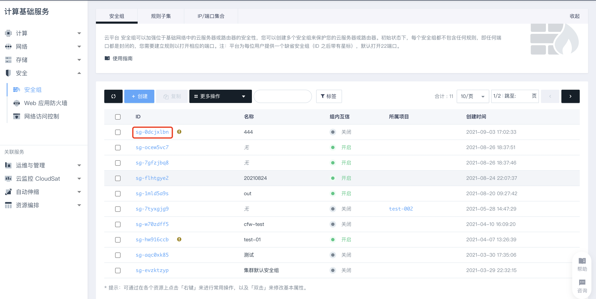
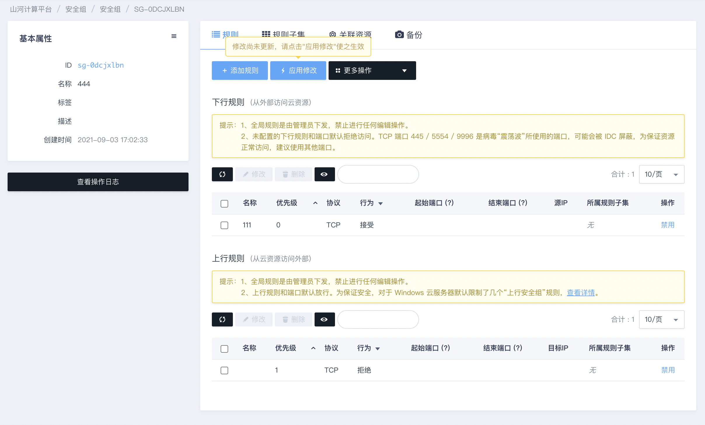

添加安全组规则
您可以通过添加安全组规则，允许或禁止安全组内的云服务器实例对公网或私网的访问。
背景信息
安全组负责管理是否放行来自公网或者内网的访问请求。为安全起见，从云资源访问外部时，大多拒绝访问。如果您使用的是默认安全组，则系统会给部分通信端口自动添加安全组规则。
前提条件
- 安全组在未添加任何安全组规则之前，从云资源访问外部允许所有访问，从外部访问云资源拒绝所有访问。
- 优先级的取值范围为0~100，数值越小，代表优先级越高。
- 同类型规则间依赖优先级决定最终执行的规则。当vm加入了多个安全组时，多个安全组会从高到低依次匹配规则。最终生效的安全组规则如下：
- 如果两条安全组规则只有授权策略不同：目前是随机生效。
- 如果两条安全组规则只有优先级不同：优先级高的规则生效。
操作步骤
-
登录 管理控制台，选择产品与服务 > 安全服务 > 安全组，进入安全组页签。
-
在云服务器页签中，点击需要添加规则的安全组。
 -
进入安全组规则页面，点击添加规则。
 -
输入安全组规则的相关信息，如优先级，协议类型，规则方向等，如下表所示。
| 名称 | 描述 |
|---|---|
| 名称 | 安全组规则的名称。 |
| 优先级 | 优先级数值越小，优先级越高，取值范围为1~100。 |
| 方向 | 上行规则：指的是从云资源访问外部。上行规则和端口默认放行。为保证安全，对于 Windows 云服务器系统判定了一些高危端口，默认将其加入了安全组并禁止。 说明:对于 Windows 云服务器，系统默认限制了几个“上行安全组”规则： |
| 行为 | 说明： 如果两个安全组规则其他都相同只有行为不同，则拒绝生效，允许不生效。 |
| 协议 | 协议类型包括： |
| 端口范围 | 协议类型为自定义TCP或自定义UDP时，可手动设置起始端口和结束端口访问。 |
| IP | 在下行规则中需要填写源 IP，在上行规则中需要填写目标IP，例如 192.168.9.1/24 或 fe80::5054:a8ff:fe81:a71e/64 等，不填表示所有IP地址。 |
- 点击提交，完成安全组规则添加。